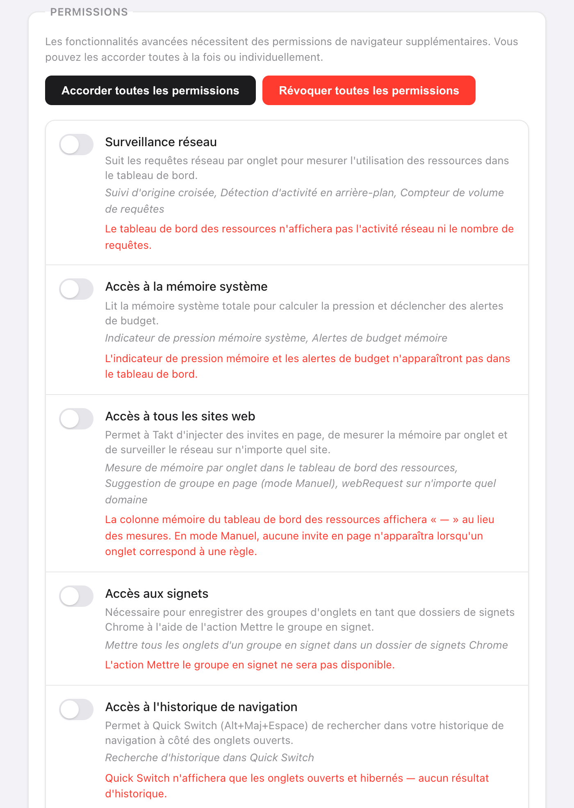

En bref : Takt n'envoie aucune donnée de navigation nulle part. Il effectue deux types de requêtes réseau, toutes deux listées ci-dessous.
- Vérification de licence auprès d'ExtensionPay : au démarrage, toutes les 15 minutes, et quand vous ouvrez le popup.
- Synchronisation Google Drive : uniquement si vous la connectez (Premium).
- Aucun compte, aucune statistique d'usage, aucune télémétrie. Le regroupement par IA s'exécute sur le modèle local de Chrome.
Pourquoi faire confiance à une extension d'onglets ?
Vous n'êtes pas obligé, et c'est raisonnable. En 2021, Google a retiré The Great Suspender, une extension de suspension d'onglets, après la découverte de code malveillant dans une version publiée après sa revente. Ses utilisateurs avaient installé un outil utile, et une mise à jour l'a retourné contre eux.
Un gestionnaire d'onglets a besoin de lire les URL de vos onglets pour fonctionner. Les bonnes questions sont donc : qu'en fait-il, qui d'autre les reçoit, et cela peut-il changer sans que vous le remarquiez ? La suite de cette page y répond pour Takt, avec des éléments que vous pouvez vérifier vous-même.
Qu'est-ce qui reste sur ma machine ?
Tout ce que Takt sait de votre navigation se trouve dans le stockage d'extension propre à Chrome :
- Règles, paramètres et profils dans
chrome.storage.sync. - Sessions, onglets en hibernation, compteurs de correspondances des règles et l'historique des domaines qui alimente les suggestions de règles dans
chrome.storage.local.
Une réserve : si la synchronisation Chrome est activée, Chrome copie lui-même chrome.storage.sync entre vos appareils via votre compte Google. C'est une fonctionnalité de Chrome, pas un serveur de Takt.
Quels serveurs Takt contacte-t-il ?
| Service | Quand | Ce qu'il reçoit |
|---|---|---|
| ExtensionPay (licence) | Au démarrage, toutes les 15 minutes, à l'ouverture du popup | Une clé de licence aléatoire. Aucune URL, aucune donnée d'onglet. |
| API Google Drive | Uniquement après avoir connecté Drive. Toutes les 15 minutes si la synchronisation automatique est activée. | Les fichiers de synchronisation de Takt, dans le dossier d'application caché de Drive |
| Connexion Google | Quand vous connectez ou déconnectez Drive | À la connexion, une recherche de votre e-mail pour indiquer quel compte est lié. À la déconnexion, une demande de révocation du jeton d'accès de Takt. |
Un détail utile : ExtensionPay ne crée cette clé de licence que lorsque vous ouvrez pour la première fois la page de passage à Premium ou de connexion. Jusque-là, la vérification ne trouve aucune clé et s'arrête sans requête réseau.
La synchronisation Drive utilise le périmètre drive.appdata. Takt peut lire et écrire ses propres fichiers dans un dossier caché et ne voit pas le reste de votre Drive. La synchronisation par dossier, l'autre option de sauvegarde, écrit dans un dossier de votre choix ; c'est votre propre client cloud qui se charge de l'envoi éventuel.
Deux autres éléments ouvrent une page web, et aucun n'est une requête en arrière-plan. Le lien pour laisser un avis ouvre le Chrome Web Store quand vous cliquez dessus. Et quand vous désinstallez Takt, Chrome ouvre une page de commentaires qui reçoit des valeurs générales comme la version, le plan et une fourchette du nombre de règles. La politique de confidentialité liste chacune de ces valeurs.
Le regroupement par IA est-il local ?
Oui. Le Groupe intelligent avec IA utilise le modèle de langage intégré à Chrome, qui s'exécute sur votre ordinateur. Chrome télécharge le modèle à la première utilisation, et Takt affiche la progression. Si le modèle n'est pas disponible, Takt regroupe plutôt par similarité, là aussi en local.
Pour être précis sur ce que voit le modèle : le titre de chaque onglet et, pour les pages que Chrome laisse Takt lire (c'est ce qu'accorde l'accès à tous les sites), les 500 premiers caractères du texte visible. Ce texte va au modèle sur votre machine et nulle part ailleurs. Il n'existe aucun serveur de Takt où l'envoyer.
Si un regroupement par IA occasionnel vous suffit, la fonction « Organize Similar Tabs » de Chrome s'exécute aussi en local et ne demande aucune extension. Takt apporte en plus des règles persistantes, le blocage des doublons, l'hibernation et les sessions.
Pourquoi Takt demande-t-il chaque permission ?
Huit permissions sont accordées à l'installation. Chacune correspond à une fonctionnalité :
| Permission | Pourquoi |
|---|---|
tabs | Lire les URL et les titres des onglets pour appliquer vos règles |
tabGroups | Créer, nommer, colorer et réduire les groupes |
activeTab | Agir sur l'onglet actif quand vous cliquez dans le popup |
storage | Enregistrer les règles, les paramètres, les sessions |
scripting | Afficher la notification de doublon et le panneau Quick Switch ; lire le texte des pages pour le regroupement par IA |
contextMenus | Entrées du clic droit comme Mettre cet onglet en veille |
notifications | Alertes comme les avertissements de budget mémoire |
alarms | Tâches planifiées : hibernation automatique, planifications de profils, vérification de licence |
Tout le reste est facultatif et désactivé tant qu'une fonctionnalité n'en a pas besoin : webRequest, system.memory et l'accès à tous les sites pour le tableau de bord des ressources (l'accès à tous les sites permet aussi au regroupement par IA de lire le texte des pages), bookmarks pour Mettre le groupe en signet, history pour la recherche de Quick Switch et les suggestions de règles, downloads pour la recherche de Quick Switch, identity pour la synchronisation Drive. Vous pouvez révoquer chacune d'elles dans Settings, ou régler Takt pour qu'il ne demande jamais.

Comment le vérifier moi-même ?
- Ouvrez
chrome://extensionset activez le Mode développeur. - Sur la carte de Takt, cliquez sur service worker à côté de « Inspecter les vues ».
- Ouvrez l'onglet Réseau et continuez à naviguer. Vous ne devriez voir que les requêtes du tableau ci-dessus, plus la lecture par Takt de ses propres fichiers
chrome-extension://.
La politique de sécurité du contenu de Takt est script-src 'self'. Il ne peut exécuter que du code intégré à l'extension : il ne peut donc pas récupérer de nouveau code sur un serveur. Tout changement de comportement doit être publié sous forme de nouvelle version sur le Chrome Web Store.
Ce dont cela ne vous protège pas
- Vous faites toujours confiance aux mises à jour. Chrome installe automatiquement les nouvelles versions. Aucune politique ne peut empêcher une future version de changer ; l'onglet Réseau est le moyen de vous en apercevoir.
- ExtensionPay est un tiers. Dès qu'une clé de licence existe, il voit cette clé et, comme tout serveur, votre adresse IP.
- La permission
tabsest large. Takt peut lire l'URL et le titre de chaque onglet. C'est ainsi que fonctionnent les règles. Ce qui compte, c'est que ces données restent sur la machine.
Un gestionnaire d'onglets qui n'a personne à qui rendre compte.
Ajouter Takt à Chrome, gratuitementQuestions fréquentes
Takt envoie-t-il mon historique de navigation ou les URL de mes onglets quelque part ?
Non. Les règles, la correspondance, les sessions, les onglets en hibernation et les suggestions restent dans le stockage de Chrome sur votre machine. Les seules données qui sortent sont la vérification de licence et, si vous la connectez, les fichiers de synchronisation de Takt dans votre propre Google Drive.
Takt nécessite-t-il un compte ?
Non. Il n'existe pas de compte Takt. Premium (3 $/mois ou 30 $/an) se paie via ExtensionPay, qui utilise Stripe.
Le regroupement par IA de Takt se fait-il dans le cloud ?
Non. Il utilise le modèle local intégré à Chrome. Sans le modèle, Takt regroupe par similarité, là aussi en local.
Pourquoi Takt a-t-il besoin de la permission tabs ?
Pour lire l'URL et le titre de chaque onglet et les comparer à vos règles. La correspondance se fait dans le navigateur ; rien n'est transmis.
Quelle différence avec The Great Suspender ?
The Great Suspender a été retiré en 2021 après l'apparition de code malveillant dans une version publiée après sa revente. La politique de sécurité du contenu de Takt n'autorise que les scripts intégrés : tout changement doit donc être publié sous forme de nouvelle version sur le Chrome Web Store, que vous pouvez inspecter.